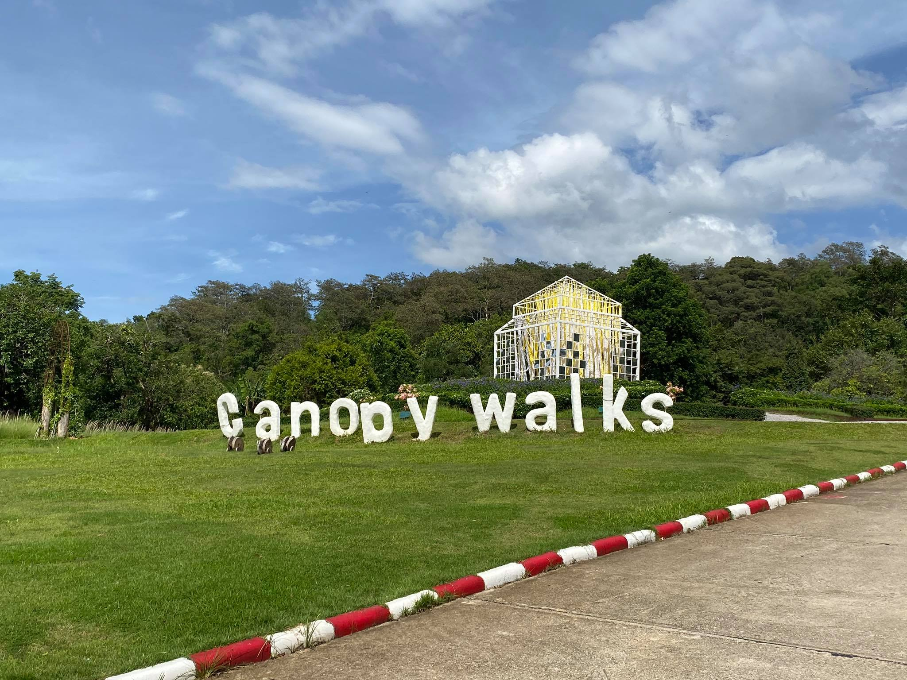
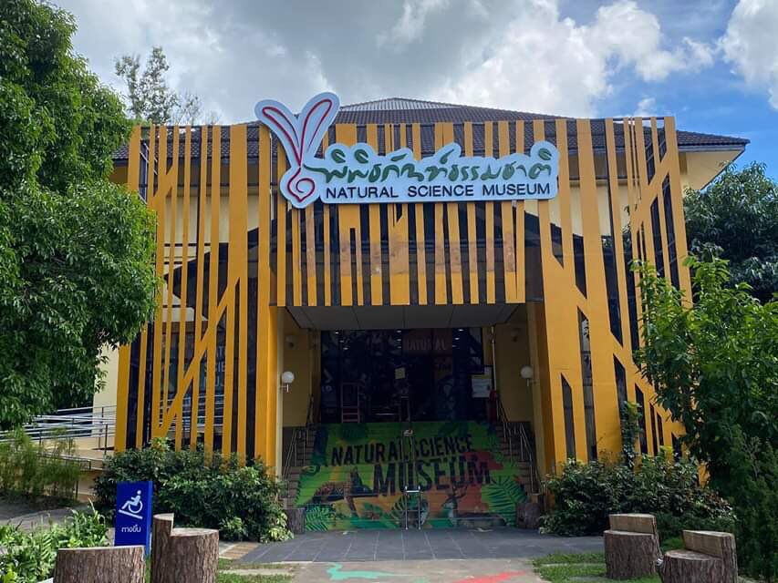
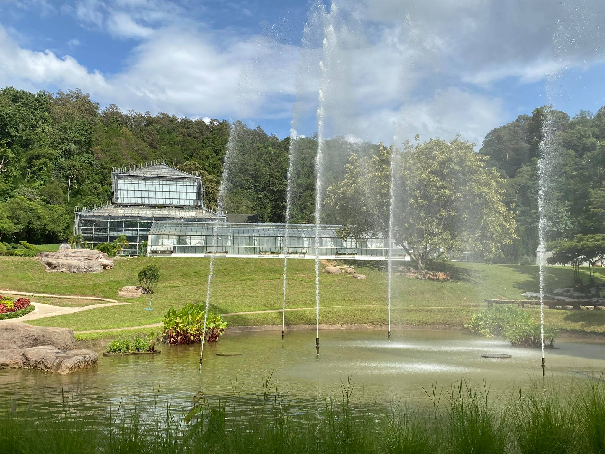
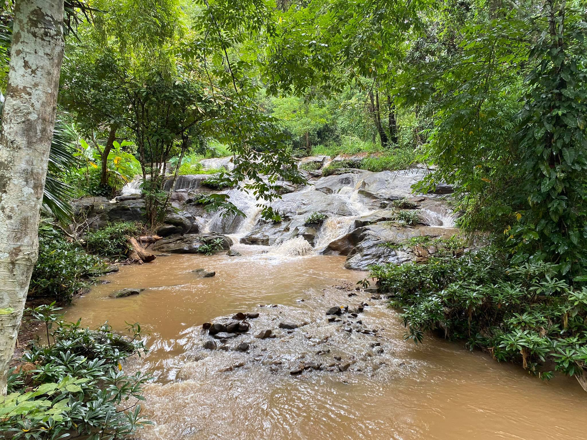

 เส้นทางเดินเหนือเรือนยอดไม้ (Canopy walkway) รายละเอียด เส้นทางเดินชมธรรมชาติเหนือเรือนยอดไม้ Canopy Walks เป็นเส้นทางเดินชมธรรมชาติเหนือเรือนยอดไม้ที่ยาวที่สุดในประเทศไทยระยะทางกว่า 400 เมตร และที่ระดับความสูงเหนือพื้นดินกว่า 20 เมตร สามารถชมทัศนียภาพที่สวยงามของทิวยอดไม้ในแบบ พาโนราม่า ที่แต่งแต้มไปด้วยฉากสุดอลังการของต้นไม้ ภูเขา รวมไปถึงทะเลหมอกจางๆ ที่ลอยละล่องเหนือปลายยอดไม้ในช่วงปลายฝนต้นหนาว
 พิพิธภัณฑ์ธรรมชาติ (Super Offers) รายละเอียด พิพิธภัณฑ์ธรรมชาติได้จัดแสดงและให้บริการความรู้ทางด้านธรรมชาติวิทยา มีอยู่ 4 โซน แสดงให้เห็นถึงความแตกต่างพืชและแมลง โซนพืชและแมลง โซนระบบนิเวศของสัตว์ โซนสีสันพรรณไม้ โซนมหัศจรรย์พรรณพืช
 อาคารเรือนกระจก (Glasshouse Complex) รายละเอียด กลุ่มอาคารเรือนกระจกเฉลิมพระเกียรติ ประกอบด้วยเรือนกระจก 12 โรงเรือนภายใน จัดปลูกตกแต่งพรรณไม้ไว้อย่างสวยงาม โดยเฉพาะพรรณไม้หายากและมีความโดดเด่น เป็นพิเศษ สามารถเข้าเที่ยวชม เรียนรู้สัมผัสคุณค่าและความงดงามของพรรณไม้ได้ตลอดทั้งปี ทุกฤดูกาล
 เส้นทางน้ำตกแม่สาน้อย (Waterfall trail) รายละเอียด เส้นทางน้ำตกแม่สาน้อย-สวนหิน-เรือนรวมพันธุ์กล้วยไม้ไทย (Waterfall trail) เป็นเส้นทางเดินเท้าเรียบไปตามห้วยแม่สาน้อยท่านจะพบกับพืชเฉพาะถิ่น และพรรณไม้แปลกตา ผ่านไปทางสวนหินซึ่งเป็นที่ รวบรวมพืชแล้งนานาชนิดผสมกับการนำหินลักษณะต่างๆ มาตกแต่งบริเวณดังกล่าวทำให้รู้สึกกลมกลืน และเส้นทางจะสิ้นสุดที่เรือนรวมพรรณกล้วยไม้ไทย ที่ซึ่งมีกล้วยไม้ไทยรวมไว้กว่า 350 ชนิด รวมระยะทางประมาณ 300 เมตร
เส้นทางเดินเหนือเรือนยอดไม้ จุดแรกสำหรับการเยี่ยมชม คือ เส้นทางเดินเหนือเรือนยอดไม้ โดยสามารถนำบัตรเข้าชมสวนที่ซื้อด้านหน้าทางเข้ามาแสดงให้เข้ากับเจ้าหน้าที่ ทางเดินลอยฟ้า มีระยะทางกว่า 400 เมตร และระดับความสูงกว่า 20 เมตร โดยออกแบบให้มีความกลมกลืนกับธรรมชาติ โครงสร้างทำมาจากเหล็ก แข็งแรง บางช่วงยังมีกระจกใส สามารถมองเห็นลงไปด้านล่างได้ ระหว่างทางเดินท่ามกลางต้นไม้ใหญ่ เราจะได้ยินเสียงนก ได้สูดอากาศที่บริสุทธิ์ รู้สึกผ่อนคลาย
อาคารเรือนกระจก เป็นโรงเรือนขนาดใหญ่ ใน สวนพฤกษศาสตร์ ที่พรรณไม้ไว้และแบ่งหมวดหมู่อย่างชัดเจน ภายในแต่ละอาคารจะมีการจัดตกแต่งพรรณไม้ชนิดเดียวกันไว้อย่างสวยงาม ให้อยู่ในสภาพแวดล้อมที่ใกล้เคียงกับธรรมชาติมากที่สุด มีการควบคุมความชื้น แสง อุณหภูมิ ได้ในระดับที่เหมาะสมกับพืชแต่ละชนิด ได้วิวถ่ายรูปสวยๆ และได้เรียนรู้พรรณไม้อีกด้วย
ร้านขายของที่ระลึก “ของขวัญ-พันธุ์ไม้ สำหรับผู้รักธรรมชาติ” ร้านขายของที่ระลึกจะตั้งอยู่ตรงที่จอดรถด้านบน จะมีของที่ระลึกขาย เช่น เสื้อผ้า กล้วยไม้ในขวด แคคตัส เเละต้นไม้ต่างๆขาย
ติดต่อเรา ที่อยู่ : 100 ม.9 ต.แม่แรม อ.แม่ริม จ.เชียงใหม่ เทศบาลนครเชียงใหม่ เบอร์โทร : 053 841 234 อีเมล : document@qsbg.mail.go.th